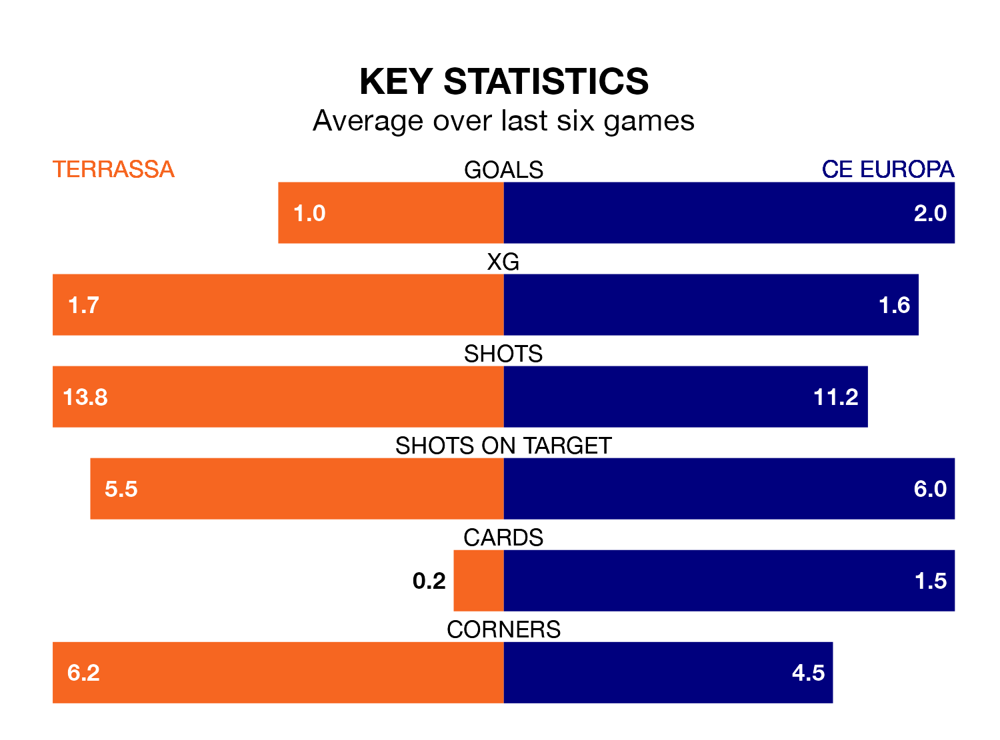

CE Europa face Terrassa on Sunday seeking to protect their formidable unbeaten run in the Segunda División RFEF Group 3.
CE Europa are unbeaten in 12, with six wins and six draws, ahead of the 4pm kick-off.
They face a Terrassa team who have won five and drawn three over the same number of games.
With 43 goals in 25 games so far this season, CE Europa are the league's joint-highest scorers with 1.7 goals per game. And they are conceding fewer than average, letting in 20 goals at a rate of 0.8 per game.
Terrassa, meanwhile, are below average scorers, with 1.1 goals per game, compared to a league average of 1.2. They have conceded 1.2 goals per game.
The away team are second in the table after 25 games, of which they have won 13 and drawn nine, earning 48 points.
The hosts are seven places behind CE Europa in ninth, with eight wins and nine draws putting them on 33 points.
In the last 10 years, Terrassa and CE Europa have played each other on 10 occasions. Terrassa won three of them, CE Europa two, and they drew five times.
On average, Terrassa scored 1.2 goals and CE Europa 1.0 in those matches.
Their last meeting was on November 5, when CE Europa won 2-0 at home.
Terrassa's last match was on March 10, a 2-0 loss against Cerdanyola del Vallès.
CE Europa beat La Nucía 4-2 last time out, on March 9, with Adrià Gené Sans, Alexandre Plà Peguero, Arnau Vilamitjana Ciurana and José Santiago Boriko Saka on the scoresheet.
Updated: 15:10 (UTC), 15/03/24